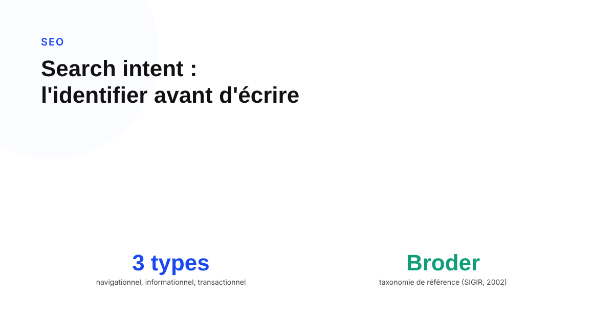
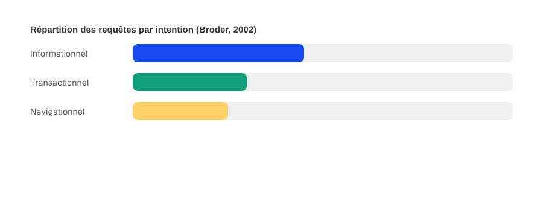

Search intent : comment l'identifier avant d'écrire, pour éviter de rater sa cible
Un contenu bien écrit sur un mot-clé à fort volume peut quand même ne jamais convertir ni même se positionner durablement, pour une seule raison : il ne correspond pas à ce que les utilisateurs cherchent réellement derrière cette requête.

« Search intent » est devenu un terme marketing tellement répété qu'on en oublie parfois qu'il vient d'un vrai travail de recherche, avec une définition précise. Comprendre son origine aide à l'utiliser correctement : non pas comme une case à cocher dans un brief SEO, mais comme la question centrale à trancher avant d'écrire une seule ligne.
Une origine académique, pas une invention marketing
La classification à l'origine du search intent vient d'un papier de recherche publié en 2002 par Andrei Broder, alors chercheur chez IBM Research : « A Taxonomy of Web Search ». Broder y distinguait trois types de requêtes : navigationnelles (l'utilisateur veut atteindre un site précis qu'il connaît déjà ou suppose exister), informationnelles (l'utilisateur veut une information, sur une page relativement statique), et transactionnelles (l'utilisateur veut accomplir une action web ultérieure, comme un achat ou un téléchargement). Son enquête estimait alors la répartition à environ 24,5 % de requêtes navigationnelles, 39 à 48 % d'informationnelles, et 22 à 36 % de transactionnelles — des proportions qui ont nécessairement évolué depuis, l'enquête de Broder datant d'avant l'essor du e-commerce et du mobile.
La quatrième catégorie, ajoutée par l'industrie SEO
Le terme « commercial » ou « commercial investigation », aujourd'hui présenté comme une quatrième catégorie à part entière dans la plupart des guides SEO, ne figure pas dans le papier original de Broder, qui parlait de requêtes « transactionnelles » au sens large d'une activité médiée par le web, pas nécessairement d'un achat. Cette distinction entre intention transactionnelle (prêt à acheter) et intention commerciale (encore en comparaison, pas encore prêt) est une extension pragmatique ajoutée plus tard par l'industrie du référencement, utile en pratique mais à ne pas confondre avec la taxonomie de recherche d'origine.

Ce que Google en dit, sans employer le terme
La documentation officielle de Google sur le contenu utile n'emploie pas littéralement l'expression « search intent », mais pose une exigence qui revient au même : le contenu principal d'une page doit directement répondre à l'intention première de cette page. Autrement dit, une page conçue pour répondre à une question doit effectivement y répondre de façon directe, sans la noyer sous du contenu tangentiel pensé pour le volume de mots plutôt que pour la réponse elle-même.
Comment la vérifier avant d'écrire, concrètement
La méthode la plus fiable reste d'observer directement les résultats déjà en place sur la requête visée : si la première page de résultats est dominée par des comparatifs, l'intention est probablement commerciale ; si elle est dominée par des fiches produit, l'intention est probablement transactionnelle ; si elle est dominée par des articles explicatifs ou des définitions, l'intention est informationnelle. Les fonctionnalités de la SERP donnent aussi un indice : la présence d'un carrousel shopping signale une intention d'achat, celle d'un featured snippet signale une intention informationnelle précise. Écrire un article de blog pour une requête dont les résultats sont majoritairement des pages produit revient à ignorer ce signal, quelle que soit la qualité rédactionnelle du contenu produit.
Le vrai risque d'un mauvais alignement
Un contenu qui ignore l'intention réelle d'une requête peut malgré tout attirer du trafic, au moins temporairement, si le volume de recherche est élevé. Le problème se révèle ensuite dans les métriques d'engagement : taux de rebond élevé, temps de lecture faible, absence de clic vers une conversion — des signaux que Google peut indirectement capter via le comportement agrégé des utilisateurs, et qui finissent par peser sur la stabilité du classement dans la durée.
FAQ
D'où vient la classification informationnel / navigationnel / transactionnel ?
D'un papier de recherche publié par Andrei Broder en 2002, "A Taxonomy of Web Search". Broder y distinguait les requêtes navigationnelles (atteindre un site précis déjà identifié), informationnelles (trouver une information statique) et transactionnelles (accomplir une action web, comme un achat ou un téléchargement). Le terme "commercial" ou "commercial investigation", souvent ajouté comme quatrième catégorie, est une extension postérieure de l'industrie SEO, pas un terme du papier original.
Google documente-t-il explicitement l'importance du search intent pour le classement ?
Pas sous ce terme précis dans sa documentation publique. Mais Google indique, dans son guide sur le contenu utile, que le contenu principal d'une page doit directement répondre à l'intention première de cette page — ce qui revient, en pratique, à exiger un alignement entre ce que propose la page et ce que cherche réellement l'utilisateur.
Peut-on se fier uniquement au volume de recherche d'un mot-clé sans regarder son intention ?
Non. Un mot-clé à fort volume mais à intention mal identifiée produit un contenu qui ne correspond pas à ce que les utilisateurs recherchent réellement, même s'il attire du trafic : taux de rebond élevé, temps de lecture faible, et absence de conversion. L'intention doit se vérifier avant d'écrire, en observant directement les résultats déjà en place sur la requête visée.
Envie d'une stratégie de contenu alignée sur la vraie intention de vos requêtes cibles ?
Pour aller plus loin, voir la page SEO, et l'article Topical authority : la méthode pour construire une autorité thématique qui tient la route.
Pour continuer sur ce sujet.